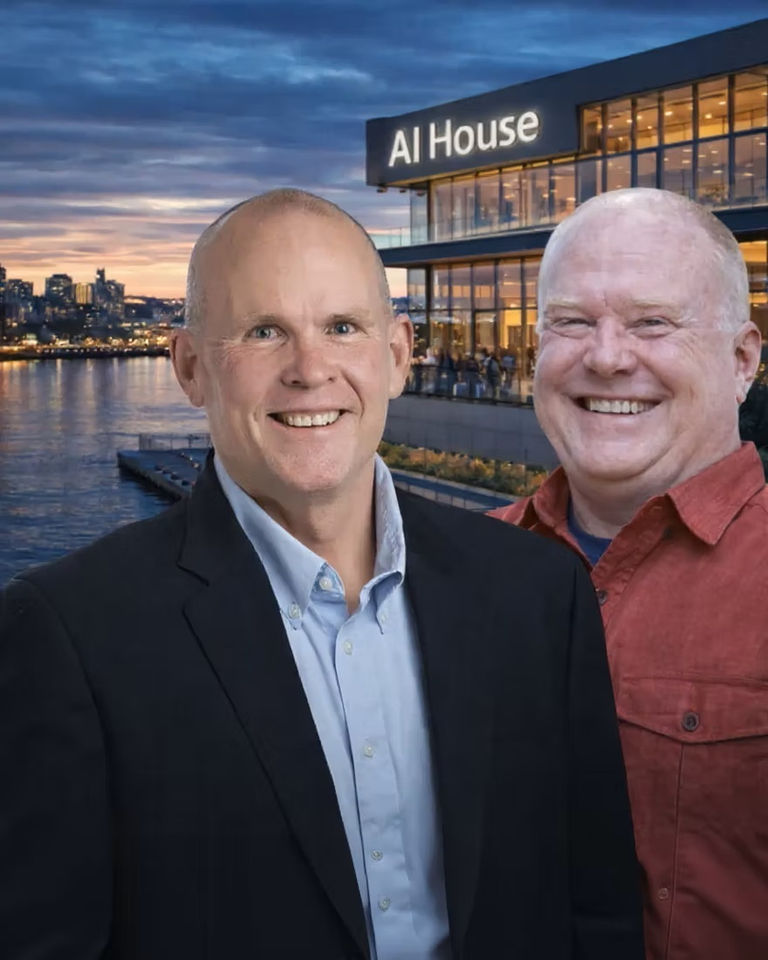

AiGovOps Foundation · Everything else
AiGovOps Foundation Academy
Everything the Foundation makes, in one place. Free to read.
AiGovOps Foundation · Everything else
Everything the Foundation makes, in one place. Free to read.
What happened, and what the rules say.
Four short classes. Each is one read, one lab, one receipt.
One hour on a real case: a rule in your own words and a signed receipt.
Five steps. The last one is a conversation.
Or search everything we have published: cases, worksheets, tools →
Wren keeps the table by the door. Say what happened — or what you are afraid will happen — and leave in an hour with a rule in your own words, a signed receipt, and a Thursday. Every door below is a real case from the hundred verified AI harms.
An AI told someone something it shouldn't have — and now we're on the hook.Air Canada, 2022. A rule, one decision, a real signed receipt in your browser. Level 200 · Retrofit · 60 min
I have a bot or an agent already, and I'm not sure it's safe to ship.The $1 Chevy; Knight Capital. Your rule in CI, refusing the merge on weakening. Level 300 · Hold · 60 min
It's already running, and nobody can say who's watching it or how to stop it.Arup; Cigna PXDX; nH Predict. Holds for a named human, and the decay arithmetic. Level 400 · Prove it · 60 min + a Thursday
Someone needs proof of what the AI actually did — a regulator, a court, a board.Robodebt; Toeslagenaffaire; Horizon. Verify evidence you did not make, offline. Start here · 10 min
I'm not sure what my problem is — I just know AI is in the building.Start with the ten minutes below. No account; you keep the card.
Run the ten-minute Gate Check → Then everything else on this site is one click away: the Library to read, the open source to build, the community to return to.
Before a single action runs. May this exact action run, and only this far? The decision is bound to the action's hash and leaves a signed receipt.
Before a rule or a system ships. Is the rule valid, reviewed and crosswalked — and did changing it leave a receipt? Weakening a rule refuses the merge.
While it runs, in real time. Holds held for a named human, budgets kept, every agent bound to an identity, coverage measured — and never failing open above the reversible tier.
After — on demand, on incident. A stranger verifies what happened, offline, without an account and without trusting us; the evidence reaches the regulator complete.

Ken Johnston — AI and data leadership at Microsoft, Ford, and CEO of Autonomic.ai.
Bob Rapp — AI/ML at Vodafone, IBM Watson, GE Healthcare, Microsoft, and General Motors.
Together, advancing responsible AI governance for organizations navigating the evolving AI landscape.